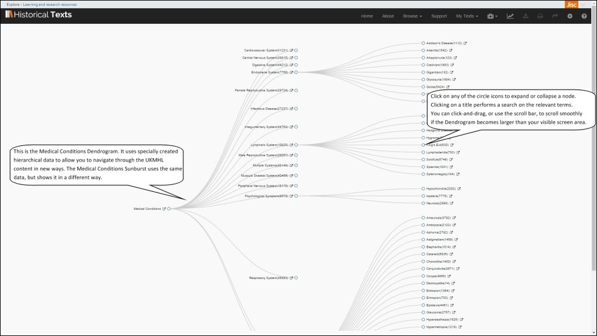

<div class="row">
    <div class="col-xs-12 topSpace">
        <div class="sideMenu">
            <div class="title">Support</div>
            <ul>
                <li><a href="/support/">Support Home</a></li>
                <li><a href="/help/">Help File</a></li>
				<li class="selected"><a href="">Quick Reference Guide</a>
                <ul>
                <li><a href="/quickref#searchresults">Search View, with results shown below</a>
                <li><a href="/quickref#advancedsearch">Search View, expanded to show Advanced Options</a>
                <li><a href="/quickref#sunburst">Using the Visualisation tools &#45; Sunburst and Dendrogram</a>
                <li><a href="/quickref#ngram">Using the Visualisation tools &#45; Ngram Viewer</a>
                <li><a href="/quickref#hospital">Using the Visualisation tools &#45; Hospital Map</a>
                <li><a href="/quickref#imagewall">Using the Visualisation tools &#45; Image Wall</a>
                <li><a href="/quickref#viewer">Using the Viewer to look at a publication</a>
                <li><a href="/quickref#threepanels">The Viewer, with the Search and Details panels open</a>                    
                    </ul>
                <li><a href="/info/" >Visualisations &#45; Info</a></li>
            </ul>
        </div>

        <div class="support">

            <ol class="breadcrumb">
                <li><a href="/support/">Support Home</a></li>
                <li class="active">Quick Reference Guide</li>
            </ol>

            <h1 id="skipTarget">Quick Reference Guide &#45; UKMHL</h1>
            
        

<p>This is the online version of the Quick Reference Guide for the UK Medical Heritage Library Collection &#40;UKMHL&#41; on Historical Texts Labs. If you wish, you can download this guide as a PDF file for offline viewing&#58;
<a href="/files/MHL-QRG-Mar20.pdf" target="_self" title="UK Medical Heritage Library Quick Reference Guide PDF"><strong>Quick Reference Guide</strong></a> &#40;PDF, 2.32MB&#41;. If you use assistive technology we recommend you use the html version of this guide rather than the PDF.
<br />You can click on any of the images to see a bigger version for easier viewing.</p>

<p>The Quick Reference Guide will help users to get going on the UKMHL on Historical Texts Labs service as quickly as possible. It isn&#39;t intended to cover every feature, or possible usage scenario.
	
<br />If you have any queries or require assistance please contact the Historical Texts helpdesk at <a href="mailto:historicaltexts@jisc.ac.uk">historicaltexts@jisc.ac.uk</a></p>
<p>We also have an <a href="http://historicaltexts.jisc.ac.uk/quickref">online Quick Reference Guide for the main Historical Texts service.</a></p>            

<br />

<h2 id="searchresults">Search View, with results shown below</h2>
<p>Enter your search terms in the Search field, and click the Search button to run it. The number of matched results will be shown in the top right of the screen.
<br />You can enable fuzzy searching by using the Fuzzy Search tickbox in the drop&#45;down menu below the Search box.
<br />You can reorder your search results by Relevance, Author or Year of Publication. 
<br />You can switch between a Tile or a List type of view, and change the number of results displayed per page.
<br />Bibliographic data for the results is shown, as are where your terms are matched within a result, a list of any images and links to multiple volumes for the relevant publications.  
<br />Clicking the title or thumbnail or the title of a result will open it in the Viewer. 
<br />Clicking the Advanced Search button will display more search options.</p> 

<br />

<a href="../images/mhl/support/screenshots/MHL-QRG1-1920px.jpg" target="_self"></a>
<!--width="1024" height="576" -->
<br />
<br />

<h2 id="advancedsearch">Search View, expanded to show Advanced Options</h2>

<p>Choose which fields to search on using the drop&#45;down arrow. You can choose from All Fields, Title, Author, Printer&#47;Publisher, Place of Publication, Language, Subject, and Genre.
<br />Specify restrictions on your search including whether or not results are illustrated, dates and ranges, and whether to search the full text, bibliographic information, or both.
<br />You can add rows to include additional search terms, and choose which fields they search on. The MUST, MUST NOT and SHOULD drop down option can be used with additional rows to create conditional searches. 
<br />To clear the search form and start again, click the Reset button.
<br />Results from your current search are still shown below. Use the scroll button on the right hand side to move down and view them.
<br />Click the tabs to browse through your search results by Author, Printer&#47;Publisher, Date, access My Saved Items, or view the Image Wall visualisation for your search.
<br />The Timeline tool shows you a graphical distribution of your search results over time. You can click&#45;and&#45;drag to make finer selections on the graph itself. Event Type lanes can be overlaid on the Timelto show different types od key historical events in the selected period. 
</p>

<br />

<a href="../images/mhl/support/screenshots/MHL-QRG2-1920px.jpg" target="_self"></a>
<!-- width="1024" height="576"  -->
<br />
<br />

<h2>Using the Visualisation tools</h2>

<p>There are dedicated visualisation tools for the UKMHL collection, accessible from the landing page or Navigation bar. The available visualisations are&#58; Body Parts Dendrogram, Body Parts Sunburst, Medical Conditions Dendrogram, Medical Conditions Sunburst, Ngram Viewer, Timeline &#40;as already shown in the previous image, above your search results&#41;, Hospital Map and Image Wall.</p>

<br />


<h2 id="sunburst">Using the Visualisation tools &#45; Sunburst and Dendrogram</h2>

<p>The Sunburst and Dendrogram visualisations use specially created hierarchical data to allow browsing of the UKMHL collection by either Body Parts or Medical Collections. The hierarchical data is the same for both Sunburst and Dendrogram but is represented in different graphical forms to allow researchers to explore serendipitously.</p> 
<br />
<br />
<a href="../images/mhl/support/screenshots/MHL-QRG5-1920px.jpg" target="_self"></a>
<!-- width="1024" height="576"  -->
<br />
<br />

<br />
<br />

<a href="../images/mhl/support/screenshots/MHL-QRG6-1920px.jpg" target="_self"></a>
<!-- width="1024" height="576"  -->
<br />
<br />

<h2 id="ngram">Using the Visualisation tools &#45; Ngram Viewer</h2>

<p>The Ngram Viewer charts the number of publications in the UK Medical Heritage Library that contain specific words or phrases, plotted by year of publication the number of publications containing those terms as a percentage of the total number of books&#47;publications in the collection.</p>
<br />

<a href="../images/mhl/support/screenshots/MHL-QRG8-1920px.jpg" target="_self"></a>
<!-- width="1024" height="576"  -->
<br />
<br />


<!-- <br>The Timeline displays information on key events between the late 18th and early 20th centuries, and displays them in relation to the number of texts in the UKMHL published in each year. 

<a href="../images/support/screenshots/MHL-QRG6-1920px.jpg" target="_self"></a> -->


<h2 id="hospital">Using the Visualisation tools &#45; Hospital Map</h2>

<p>The Hospital Map shows hospitals on a map of the UK, and allows searching both on the map or manually on the full list to find hospitals and link to publications in the collection where they are mentioned. Filtering by date range is also possible.</p>

<br />

<a href="../images/mhl/support/screenshots/MHL-QRG7-1920px.jpg" target="_self"></a>
<!-- width="1024" height="576"  -->
<br />
<br />

<h2 id="imagewall">Using the Visualisation tools &#45; Image Wall</h2>

<p>The Image Wall shows a tiled display of all images from the publications in the result of a search. Mousing over a tiled image causes the image to flip and show the parent publication title, and clicking on a tile opens the publication on the relevant page in the Viewer.</p>
<br />

<a href="../images/mhl/support/screenshots/MHL-QRG9-1920px.jpg" target="_self"></a>
<!-- width="1024" height="576"  -->
<br />
<br />


<h2 id="viewer">Using the Viewer to look at a publication</h2>

<p>When using the Viewer, you can navigate through the publication and toggle between single or side&#45;by&#45;side page views using the toolbar near the bottom&#45;middle of the page.
<br />You can zoom in or out of the image, rotate in 90 degree steps, and switch to a fullscreen view from the toolbar to the left hand side of the screen.
<br />Click the Search button on the left hand side to open the Search Panel for more options.
<br />Click the Down Arrow icon near the top right of the screen to see options for downloading the whole publication as a searchable PDF, a single page image as a JPEG, the full text of the publication in either ePub or plain text formats, or the bibliographic citation data for the publication in the .RIS format.
<br />Click the Details button to open the Details Panel for more options.
<br />Click the Results link near the top to return to your search results list.
</p>
<br />

<a href="../images/mhl/support/screenshots/MHL-QRG3-1920px.jpg" target="_self"></a>
<!-- width="1024" height="576"  -->
<br />
<br />

<h2 id="threepanels">The Viewer, with the Search and Details panels open</h2>
<p>In the Search Panel to the left, you can switch between Thumbnails, Pages where your search was matched and a list of related Publications on the corresponding tabs. Click a thumbnail or link from the Pages tab to jump to that page immediately. Links in the Publications tab link to similar or related publications to your search, and can be clicked to open them in the Viewer.  
<br />Click the Right Arrow icon near the top right of the screen to view a permanent URL that links directly back to this publication.
<br />In the Details Panel to the right you can click the tabs to toggle between bibliographic data for the publication, the full text, and the Table of Contents data.
<br />The Search Panel, Viewing Panel and Details Panel can all be used simultaneously if desired.
</p>


<br />

<a href="../images/mhl/support/screenshots/MHL-QRG4-1920px.jpg" target="_self"></a>
<!-- width="1024" height="576" -->
<br />
<br />
        </div>
        </div>
    </div><html xmlns:mso="urn:schemas-microsoft-com:office:office" xmlns:msdt="uuid:C2F41010-65B3-11d1-A29F-00AA00C14882"><head>
<!--[if gte mso 9]><xml>
<mso:CustomDocumentProperties>
<mso:_dlc_DocId msdt:dt="string">N7XHR37R3CPZ-153979576-263</mso:_dlc_DocId>
<mso:_dlc_DocIdItemGuid msdt:dt="string">eab00af0-0598-400c-b1af-1a9661ea99e6</mso:_dlc_DocIdItemGuid>
<mso:_dlc_DocIdUrl msdt:dt="string">https://jisc365.sharepoint.com/sites/dcrd/HTJA/_layouts/15/DocIdRedir.aspx?ID=N7XHR37R3CPZ-153979576-263, N7XHR37R3CPZ-153979576-263</mso:_dlc_DocIdUrl>
</mso:CustomDocumentProperties>
</xml><![endif]-->
</head>